Motion Control of Wafer Scanners in Lithography Systems From Setpoint Generation to Multistage Coordination¶
2024, IEEE Transactions on Instrumentation and Measurement
Fazhi Song, Yang Liu, Yue Dong, Xinkai Chen, Jiubin Tan
Abstract¶
本文旨在综合考虑精度要求与机电动力学特性，识别 wafer scanner 中的运动控制问题，并研究适用于不同动态特性的被控对象的控制方法。
所讨论的运动控制方面：
- 通过 trajectory planning(轨迹规划) 与 input shaping 生成平滑运动曲线的 setpoint generator
- 兼具静态与动态设计的多自由度解耦(multi-degreeof freedom (DOF) decoupling)控制
- 结合线性/非线性反馈(linear/nonlinear feedback)及基于模型或数据的前馈控制(model-/data-based feedforward)的单自由度运动控制(sinlge DOF motion control)
- 用于实现 wafer stage (WS)、reticle stage (RS)、short-stroke module (SSM) 与long-stroke module (LSM) 之间，以及 LSM 与 balance mass(BM) 之间同步运动的多级协调控制（multistage coordination control）
这些方面的控制难点在于：
- 各运动自由度之间的串扰效应
- 机电系统中的柔性模态（flexible modes）
- 模型不确定性
- 随机（stochastic）与非随机（nonstochastic）干扰/噪声
- 诸如 Bode’s sensitivity integral 等固有的设计权衡
关键词：
- coordination control（协调控制）
- data-based control（基于数据的控制）
- decoupling control（解耦控制）
- feedback control（反馈控制）
- input shaping（输入整形）
- precision motion systems（精密运动系统）
- trajectory planning（轨迹规划）
I. Introduction¶
过去几十年来，为缩小特征尺寸、提升集成电路的生产效率并推动摩尔定律的发展，光刻机的设计与制造日益复杂。光源波长已从蓝光（436 nm）逐步演进至紫外光（UV，365 nm）、深紫外光（DUV，248 nm和193 nm），直至目前的极紫外光（EUV，13.5 nm）。投影光学系统也经历了从采用光学倍率约为4:1的透射式镜头，到浸没式技术，再到如今的反射式镜片的演变。晶圆曝光设备则由步进式光刻机发展为扫描式光刻机，其中扫描式光刻机中的晶圆台数量由一个增至两个：一个用于晶圆表面形貌测量，另一个用于晶圆曝光。
在现代光刻机中，每小时超过280～300片晶圆（WPH）的产能已较为常见，这意味着每片包含约100个曝光场的晶圆的曝光时间不足10秒。因此，晶圆台（WS）必须以超过0.5 m/s的速度和40 m/s²的加速度进行运动。为了实现更大视场的曝光，RS在此过程中需执行更为剧烈的运动，其速度是WS的四倍。
更具挑战性的是，为确保高质量曝光，必须在数毫秒内将允许的运动误差控制在亚纳米量级，同时完成此类极端的运动轨迹规划。
晶圆扫描仪中，这些严格的运动性能指标实际上并不会对传统控制方法构成威胁，只要满足以下两个条件：
- 扰动和测量噪声具有已知的特性，甚至可以忽略不计；
- 机械设计使得运动系统在足够宽的、与控制相关的频率范围内表现为刚体
第一个假设往往难以实现，尤其是在考虑环境调控、随机噪声以及高加速度所引起的振动时。
此外，随着运动性能的持续提升，控制带宽被扩展至柔性动力学显著存在的频段，从而进一步削弱了刚体假设的有效性
II. Wafer Scanners and Performance Indicators¶
2.1 Wafer Scanner Dynamic Architecture¶
晶圆扫描设备中配置两个独立的晶圆台，如图3. 所示。其中，晶圆的测量与曝光被解耦为两个相互独立且并行运行的晶圆台：位于曝光工位的晶圆台负责曝光作业，而位于测量工位的晶圆台则执行卸载已曝光晶圆、装载新晶圆、进行晶圆对准以及获取其三维形貌信息等辅助操作。当两个晶圆台各自完成 assigned 的任务后（通常曝光时间长于辅助操作时间），二者会互换位置，从而开启下一个循环。
图3.:
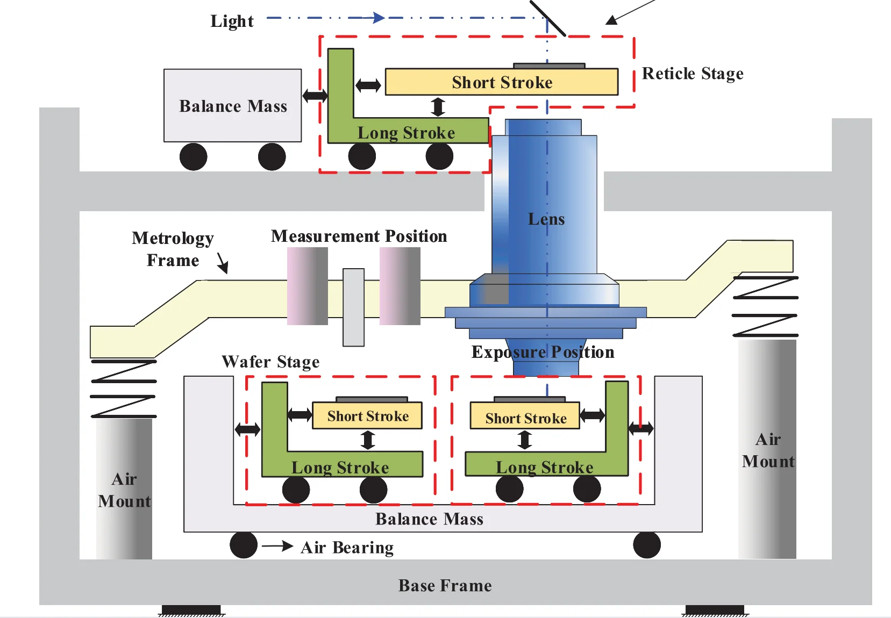
双工位晶圆扫描仪以基座框架（Base Frame, BF）为支撑，如图3. 所示，该框架通过基础隔振器与外界隔离。鉴于即使微小的振动也会降低最终的成像性能，因此引入了一个额外的框架——测量框架（Metrology Frame, MF），其通过与基座框架相连的气浮支承进行支撑。这些具有极低悬挂频率的气浮支承能够有效阻隔来自外界及基座框架的振动和作用力，从而在测量框架内部营造出一个宁静稳定的环境。对干扰敏感且对成像性能有重要影响的镜头和测量设备均安装于测量框架上；而可能破坏测量框架稳定性的设备，如晶圆台（WS）、掩模台（RS）以及热源等，则被移出测量框架，改由基座框架承载。为了减轻 WS 和 RS 高速高加速度运动所产生的反作用力，并防止因空气支座性能不完善而将这些力传递至 MF，系统采用平衡质量块 (BM) 来抵消这些力，而不是将其耗散至 BF 中。BM 配备空气轴承，可在 WS 的 XY 平面内自由移动，而在RS中仅沿扫描方向（Y向）移动。
WS和RS分别用于承载晶圆和掩模，二者均由两个模块构成：1）短行程模块（SSM）；2）长行程模块（LSM）。SSM直接支撑晶圆或掩模，并采用无接触式驱动器（如洛伦兹电机或音圈电机，VCM）进行驱动，以避免与系统其他部件发生物理接触。尽管这些驱动器可实现纳米级定位精度，但其仅数毫米的行程范围不足以满足300 mm晶圆的曝光需求。为此引入了LSM，其通常由永磁直线同步电机驱动，行程可达1 m，定位精度为中等水平的微米级。短行程驱动器的线圈部分（通常作为定子）与LSM相连，从而避免电缆及冷却管路穿越高精度的SSM。这种双层驱动结构可在保证纳米级精度的同时提供米级的运动范围，从而确保整片晶圆的曝光性能。需要注意的是，与需长行程的晶圆/掩模扫描方向不同，用于姿态调整的垂直方向行程小于2 mm，因此无需配置 LSM。
本文讨论的运动控制内容涵盖从设定值生成到多个系统之间的运动协调，包括：
- 晶圆台（WS）与掩模台（RS）
- 短行程模块（SSM）与长行程模块（LSM）
- 以及长行程模块（LSM）与平衡重量（BM）
之间的协调。所研究的运动控制对象既有多自由度平台，如晶圆台/掩模台的主伺服电机，也有通过解耦得到的单自由度系统
2.2 Performance Indicators of Wafer Scanners¶
晶圆扫描仪的性能指标通常以成像质量、套刻精度和生产效率来表征。
临界尺寸（Critical Dimension, CD）:
\({\rm CD}\)即线宽（Line width, LW）分辨率，用来描述能够被印刷的最小特征尺寸，遵循上述瑞利判据。
浸没式光刻技术用于增大数值孔径 \(\rm NA\)，其核心是在镜头与晶圆之间引入一层水介质以提升数值孔径。该方法使数值孔径突破1.0，最高可达1.44（基193 nm DUV）。值得注意的是，浸没式技术仅适用于 193 nm DUV系统，而无法应用于极紫外光（EUV）系统，因为 EUV 光无法在任何已知材料中传播，包括空气和水。
焦深（Depth of Focus, DoF）是指由透镜聚焦的点光源在保持其峰值强度不低于峰值值 20% 时所允许的最大轴向位移范围。对于小数值孔径（NA）的情况，焦深可近似表示为：
一个功能芯片通常包含多层具有不同图案的结构；因此，需要进行多层曝光才能制造出可工作的芯片。在晶圆完成一次曝光并经过若干化学、机械和热处理工序后，会在其表面涂覆一层新的光刻胶，并送入晶圆扫描设备。随后，在上一层图案的基础上再曝光一个新的图案。这一循环会反复进行多次，直至晶圆上的各层叠加形成完整的集成电路结构。光刻必须确保各层之间的精确对准。套刻误差用于描述这一能力，其定义为将图案精确地曝光在前一层图案之上的精度。根据曝光不同图案时是否使用同一台光刻机，套刻误差可分为单机套刻误差（Singe Machine Overlay, SMO）和匹配机套刻误差（Matched-Machine Overlay, MMO）。
生产率，即晶圆原始吞吐量，是指单位时间内所处理的晶圆数量。对于现代光刻机而言，280 WPH (Wafers per Hour)的生产率并不罕见。
2.3 Performance Indicators of Motions Stages¶
WS 在曝光晶圆片时执行扫描运动，并与 RS 的运动保持同步，直至该晶圆片的曝光完成。典型的扫描轨迹如图4所示，其包含三个阶段：加速段、匀速段和减速段。在加速段，晶圆台被加速至曝光所需的恒定速度；随后，经过一段静止时间（Setting Time, ST），使位置误差降至可接受水平，此时 die 上的第一个曝光点进入照明狭缝。匀速段持续至 die 上最后一个曝光点离开狭缝，从而完成对该 die 的曝光；之后，晶圆台将减速至静止，或再次加速至下一 die 的第一个曝光点
注意：以上“加速-匀速-减速”三阶段过程是针对单个 die（芯片区域）的一次完整扫描曝光过程，而不是一次性曝光整个晶圆上的所有 die。
图 4:
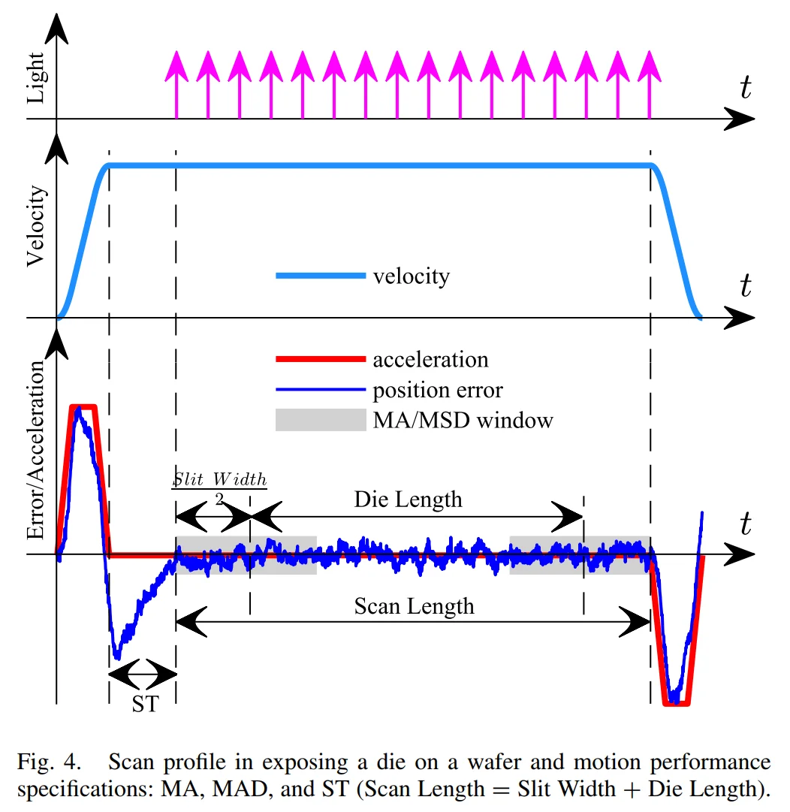
如果晶圆台在晶粒通过狭缝时存在位置误差，则该图像将无法被放置在晶圆上的期望位置。移动平均（MA）误差用于量化某一图像特征相对于其理想位置的平均偏差，其定义如下：
\(T_e\) 表示曝光时间，等于狭缝宽度除以扫描速度，\(e(\tau)\) 表示位置误差，其中 \(t\) 表示成像点位于照明狭缝中心线时的时间。显然，\(\rm MA\) 表示曝光过程中晶圆的平均位置误差。
除了图像偏差（image deviation）之外，位置误差（position error），尤其是其高频成分，会导致图像模糊（对比度损失, contrast loss）。这种现象类似于在拍照时没有保持相机静止，导致得到一张模糊的图像。这种效果由位置误差的移动标准差 (moving standard
deviation, MSD) 进行量化，参数化如下：
\(\mathcal{MSD}\) 计算的是误差在同一个窗口内的标准差，衡量的是误差的波动或离散程度。\(\mathcal{MSD}(t)\) 反映了高频的动态误差，比如振动。它会影响曝光图形的清晰度（锐度），过大的 \(\mathcal{MSD}(t)\) 会导致图像模糊。
其离散计算形式：
其中：
- \(T_s\) 代表采样周期
- \(k=t/T_s\) 代表离散时间索引
- \(N=T_{e} / T_{s}\) 代表采样点数
Example
在控制系统的算法中，\(\mathcal{MA}(t)\) 和 \(\mathcal{MSD}(t)\) 是在扫描过程中实时计算的。如下是一个简化的例子：
关键参数：
e_means[k]: 第 k 个采样时刻的同步误差（晶圆台与掩模台的实际位置差与期望位置差之差）v_scan：曝光时的扫描速度（恒定）。l_slit：照明狭缝的宽度（沿扫描方向）。T_e：单点曝光时间，即晶圆上任意一点穿过狭缝所需的时间。根据论文，\(T_e = \frac{l_{\rm slit}}{v_{\rm scan}}\)
算法计算流程（简化伪代码）：
# 假设系统以采样周期 Ts 进行数据采集
# e_meas 是一个数组，存储了从扫描开始到当前的同步误差采样值
# 计算窗口大小 N：表示在单点曝光时间 T 内，系统采集了多少个误差样本
N = round(T / Ts) # T是曝光时间，Ts是采样周期
# 在扫描过程中，实时计算 MA 和 MSD
for k in range(N, len(e_meas)):
# 提取当前计算窗口内的误差数据
window = e_meas[k-N : k]
# 计算移动平均 MA(t)
ma_k = sum(window) / N
# 计算移动标准偏差 MSD(t)
# 先计算方差
variance = sum((x - ma_k)**2 for x in window) / N
msd_k = sqrt(variance)
# ma_k 和 msd_k 就是当前时刻的 MA 和 MSD 值
# 控制系统会实时监控这两个值，确保它们不超过阈值
# 例如，MA 必须小于约 1 nm，MSD 必须小于约 7 nm [2†L17-L18]
实时计算的意义：
- 实时监控：控制系统在每个采样时刻都会更新
MA[k]和MSD[k]。如果MA[k]或MSD[k]超出预设的安全阈值（如 MA > 1 nm 或 MSD > 7 nm），系统会报警或调整控制策略。 - 最终性能评估：完成一个 die 的扫描后，通常会取整个扫描过程中 MA(t) 和 MSD(t) 的最大值作为该 die 的最终性能指标。
Attention
上述 MA 和 MSD 当然是以离散形式计算的，这会涉及到控制系统的采样。
- 采样对象主要是 WS/RS 的位置和速度
- 数据来源：激光干涉仪或光栅干涉仪等传感器，会实时测量晶圆台和掩模台在多个自由度上的精确位置。
- 速度通过位置差分得到
现代光刻机的采样频率通常在 几千赫兹到几十千赫兹(\(\rm kHz\)) 之间。先进光刻机内部通常嵌入包含 20 个以上测量轴的高速超精密激光干涉仪，用于实时测量米/秒级高速运动的掩模/硅片相对位置
2.4 Performance Relationship¶
For dense line-space (L/S) pattern:
因此，为了达到相同的平均绝对误差（MA）和均方偏差（MSD），在提高速度的同时必须进一步减小原始位置误差，这需要采用先进的控制方法。
III. Motion Control Context in Wafer Scanners¶
SSM: 行程范围：微米量级，控制精度：纳米量级
LSM: 行程范围：毫米量级，控制精度：微米量级
光刻机主要运动控制架构可分为五个功能模块：
- 设定值生成器（setpoint generator,）
- 位置控制器（position controller）
- 执行器系统（actuator system）
- 台体机械结构（stage mechanics）
- 测量系统（measurement system）
其中，台体机械结构即上文图 3.。本节将重点讨论其余四个组成部分。这些模块协同工作，以管理光刻机在不同工作模式下的运动，包括初始化、晶圆/掩模交换、版图测量、对准及曝光等。由于除测量系统外，各模式下的运动控制架构基本一致，下文将以曝光模式为例展开讨论
测量系统将原始传感器数据转换为可反馈至位置控制器的数据。
曝光模式下，晶圆/掩模的位置通常由安装在测量框架（MF）上的干涉仪进行测量。
辅助传感器：
- SSM 相对于 LSM 的位置由涡流传感器或霍尔传感器（称为差分传感器）测量
- LSM 相对于 Balance Mass 的位置以及 Balance Mass 相对于 Base Frame 的位置则始终由线性增量编码器测量。
根据不同的运行模式，可采用不同的传感器组合来生成所需的反馈信号。例如：
- 在初始化模式下，在扫描仪启动时，SSM 以 LSM 为基准进行控制，因此采用差分传感器而非尚未就绪的干涉仪作为反馈信息
- 在掩模/晶圆交换模式下，SSM 则以 BF 为基准进行控制，并将BM位置传感器、LSM位置传感器与差分传感器的输出之和用作反馈信号
- 本文重点关注曝光模式：此时，SSM 以 MF 为基准，利用干涉仪数据作为反馈信息；LSM 以由 SSM 支撑的台体质心（COG）为基准，采用差分传感器作为反馈信号；Balance Mass 则以 BF 为基准，使用 BM 位置传感器作为反馈信息
设定值发生器（Setpoint Generator）用于生成曝光模式下所需的设定值轨迹。水平方向的设定值通常遵循多项式运动轨迹，如图4所示；而垂直方向的设定值则由 map measurement mode 期间构建的 3D-map 确
定
各 stage 的位置由位置控制器（position controller）进行调节。这些控制器以测量系统提供的反馈信息以及设定值生成器给出的设定值作为输入，输出所需的控制信号，驱动各 stage 将掩模上的图形与晶圆上的裸片精确对准至曝光位置。
通常采用两类 position controller：基于反馈的控制器 \(\mathbf{C}_{\rm fb}\)，其输入为反馈值与设定值之间的误差信号；以及基于前馈的控制器 \(\mathbf{C}_{\rm ff}\)，其输入通常为设定值。
位置控制器的输出（即 Lens Coordinate System 下的力）被送至 Actuator System。在该系统中:
- Lens Coordinate System 下的力通过增益调度（Gain Scheduling, GS）转换为以质心（COG）为原点的台面坐标系（Stage Coordinate System）下的力。
- 所得的这些力进一步经由增益平衡（Gain Balancing, GB）处理，转换为各执行器（actuator）的控制力；
- 随后，功率放大器将这些控制力转化为实际的执行器电流，并最终由执行器将其转化为驱动台面所需的物理作用力
Beyond those abovementioned contents, nonideal mechatronic, disturbance, and nonlinearity necessitate additional force compensations, represented by \(f_{c1}\) and \(f_{c2}\) in Fig. 6. For instance, in the position controller system, height map feedforward compensation is necessary in the WS in order to avoid the position error induced by the mirror tilt relative to the lens. Similarly, in the RS, this compensation prevents the chuck’s wedge form from introducing additional position errors in the vertical direction when the RS moves horizontally. Moreover, to make the stages follow the lens exactly, lens acceleration feedforward is of the essence. As for the actuator system, Coriolis force, motor damping, motor stiffness, motor parasitic force, COG shift, and magnetic disturbance are terms that all need to be compensated.
完整的运动控制架构示意图（图 6.）：
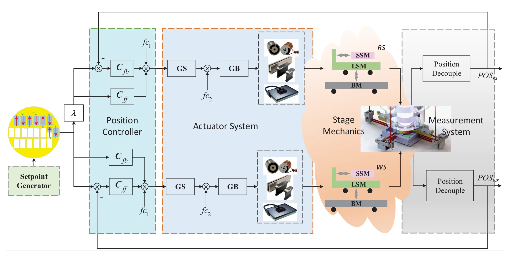
IV. Setpoint Generation¶
晶圆扫描是通过跟踪由 Setpoint Generator 根据扫描路径及物理约束所生成的设定值轨迹（Setpoint preofiles）来实现的。
在生成设定值时，应综合考虑时序、执行器负载、精度、复杂度、可靠性和实现方式等诸多因素，因为这些因素会对跟踪误差、吞吐量、结构振动和热载荷产生直接且显著的影响。
梯形速度曲线“允许的加速度（对应执行器负载）将台面加速至曝光所需的速度，随后减速至零”会在加速度发生突变时产生无限大的跃变冲击，从而引发超调、机械共振，甚至冲击振动。为解决这一问题，轨迹规划（trajectory planning）与输入整形（input-shaping）技术已被视为有效的解决方案。
4.1 Trajectory Planning¶
定义：n 阶 trajectory
\(n\) = 从位置曲线开始，能够求多少次导数，知道曲线不再可求导（通常表现为不连续，而非严格意义的不可导）。
更准确来说，\(n\) 代表着位置函数本身是分段 \(n\) 次多项式。
注：各阶导数分别成为：position, velocity, acceleration(加速度), jerk(跃度), snap(急动度), crackle(振荡度), pop(冲击度), ...
例如梯形速度曲线：
就是二阶 trajectory，因为位置曲线可以求导得到速度曲线，速度曲线可以求导得到 acceleration 曲线：
此时，加速度曲线已不再可求导，因为其存在阶跃点，存在冲激 jerk。
\(n\) 阶多项式 S 曲线运动规律的规范形式由 \(2^{n} - 1\) 个段组成，每一段定义为最高阶导数曲线的平滑段，如图7. 所示。
其中起始 \(2^{n-1}-1\) 段和终止 \(2^{n-1}-1\) 段分别对应加速和减速阶段，而第 $2^{n-1} $段则为曝光发生的匀速阶段。
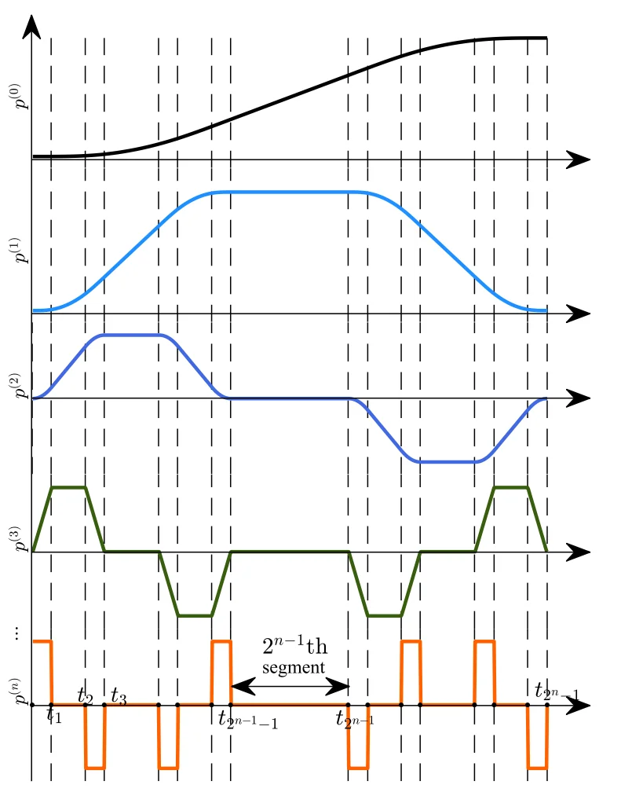
原论文给出的最高阶导数定义：
最高阶导数通常采用 bang-off-bang type (开关式) 控制
其中 \(p^{n}_{\rm max}\) 为所规定的最高阶导数的最大值；\(j\) 为满足关于 \(x\) 不等式：\(2^{x-1}<i\) 的最大整数 \(x\) 值。
最高阶导数取值发生变化的时间点 \(t_{0}, t_1, t_2, \dots, t_{2^n-1}\)，可通过其他特定导数的约条件来确定。
事实上，该公式不严格正确。例如对于区间 \([t_2, t_3)\)，最高阶导数值按照公式定义应该为：
此时 \(j\) 为满足不等式：\(2^{x-1} < i=2\) 的最大整数值，即：\(j=1\)，因此：
然而事实上，此时 \(p^{(n)}(t)\) 应该等于：\(p^{(n)}_{\rm max}\)。
更准确来说，\(n\) 阶 S 型曲线的最高阶导数应该用递归形式定义。设\(n\) 阶 S 型曲线的最高阶导数为：\(M_{n}\)，则有：
例如：
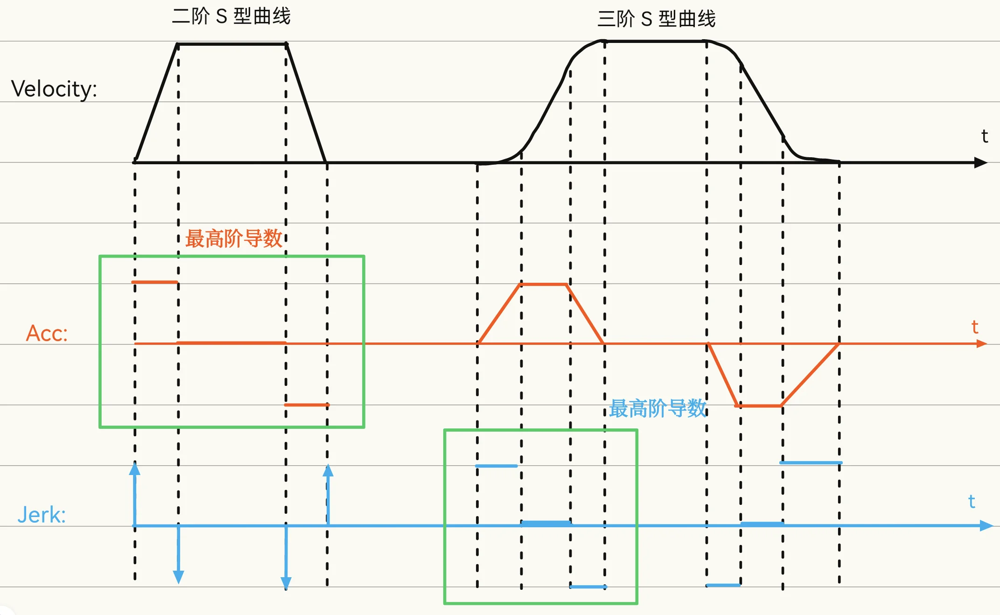
无论如何，最高阶导数都是分段常数的形式。
更低阶的导数以及原函数（例如位置曲线、速度曲线）可通过对最高阶导数进行连续积分得到。假设在某一段：
中，有：
那么积分一次：
再积分一次：
再积分一次：
而对于 \(p^{(m)}(t)\) 就有：
事实上，其实就是在 \(t_k\) 这一点对 \(p^{m}(t)\) 进行 Taylor 展开，并且余项为0（公式 8）：
其中 \(t \in [t, t_k), k=0, 1, \dots, 2^{n}-2\)。
尽管高阶轨迹在较高频率段 inherently 具有较低的能量成分，从而能够降低跟踪误差并减少ST，但从式（8）可以看出，高阶轨迹需要更长的执行时间。通常认为，四阶或五阶轨迹能够在平滑性与计算复杂度之间取得良好的平衡，且硬件实现的复杂度也在可控范围内，因此在光刻机中被广泛采用。
如下文献提供了用于设计高阶多项式轨迹的方法：
[20] P. Lambrechts, M. Boerlage, and M. Steinbuch, “Trajectory planning and feedforward design for electromechanical motion systems,” Control Eng. Pract., vol. 13, no. 2, pp. 145–157, Feb. 2005.
[26] K. D. Nguyen, T.-C. Ng, and I.-M. Chen, “On algorithms for planning S-curve motion profiles,” Int. J. Adv. Robot. Syst., vol. 5, no. 1, p. 11, Mar. 2008.
一些研究尝试用三角函数替代矩形脉冲来设计最高阶导数，以保证其连续性。通过对该三角函数进行积分，即可得到所谓的三角函数 S 曲线运动规律。文献 [26] 中的实验结果表明，如图8所示、仅由七个段组成的三角函数轨迹，其跟踪性能可与具有31个段的五阶多项式轨迹相媲美。
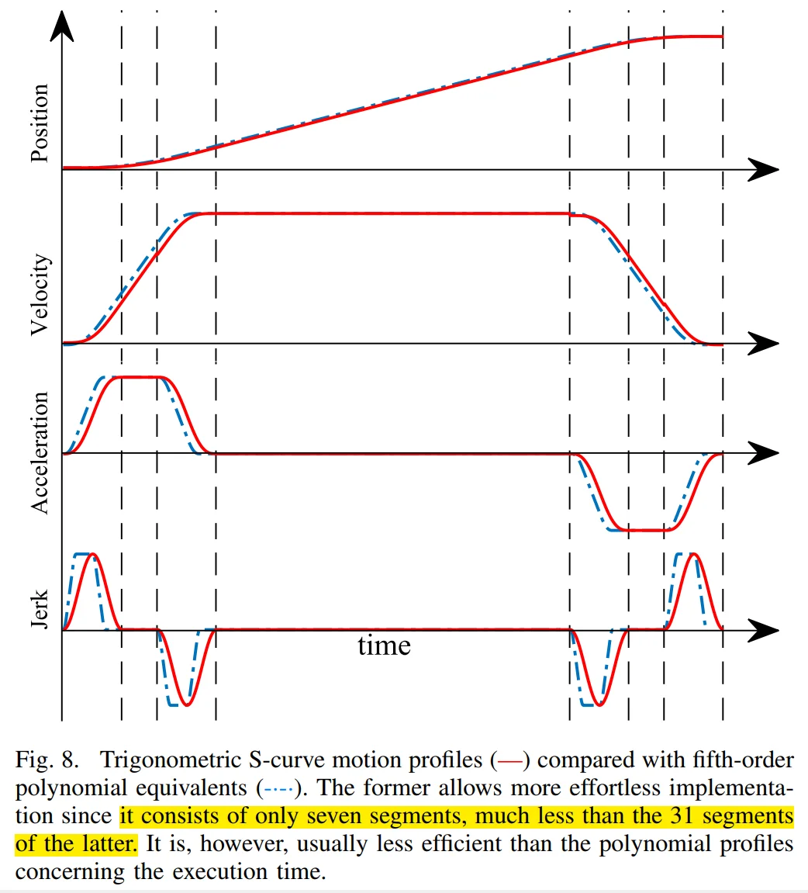
然而，这种便利性也带来了效率降低的弊端：由于最大 jerk 值无法持续保持，导致执行时间延长，并且驱动系统的动态能力未能得到充分利用。由此可见，三角函数轨迹的效率较低。
Note
先建立如下工程链路脑图：
flowchart TD
A[目标位置] --> B[Trajectory Planning]
B --> C[Input Shaping]
C --> D[离散 Setpoints]
D --> E[FF+FB Controller]
E --> F[Actuator]
F --> G[WS/RS]
trajectory planning 解决的是：“我希望平台在每一个时刻处于哪里、速度多大、加速度多大，同时不违反 \(v_{\max},a_{\max},j_{\max}\) 等运动学限制。
input shaping 解决的是另一个问题：“即使这条轨迹在运动学上合法，它会不会刚好激励机械结构的共振，使 WS/RS 抖起来？”
Trajectory 告诉控制系统：我希望 WS/RS 在时刻 \(t\) 应该处于什么状态
真正让电机运动的是后面的 servo controller 和 actuator。
例如 A 部分得到一条位置轨迹 \(p_r(t)\)，以及它的导数\(v_r(t),\quad a_r(t),\quad j_r(t),\dots\)
那么数字控制系统在采样周期 \(T_s\)
下，会得到：
这些才是真正意义上的离散 setpoints。
然后每个 servo cycle，大体进行这样的计算：\(e[k]=p_r[k]-p_{\rm measured}[k]\)
feedback controller 根据 \(e[k]\) 产生控制量：\(u_{\rm fb}[k]=C_{\rm fb}(e[k])\)
同时 feedforward 可以直接利用规划好的 \(a_r,j_r,\dots\)：\(u_{\rm ff}[k] = C_{\rm ff}(v_r[k],a_r[k],j_r[k],\dots)\)
最后：\(u[k]=u_{\rm fb}[k]+u_{\rm ff}[k]\)
再经过 force decoupling / actuator allocation，变成各 actuator 的 force/current command。而 metrology system 测得实际位置 \(p_{\rm measured}\)，闭环回来继续纠错。
Example
实际机器不会真的计算“积分”。
阶段 1：Trajectory planning 先决定：
- 总位移
- \(V_{\max}, a_{\max}, j_{\max}\)
- 各个 segment 的时间：\(t_1, t_2, \dots\)
- 各个 segment 的各多项式系数
例如三阶 S 曲线中的某一段：
其中 \(\tau=t-t_i\) 是变量/输入，而 \(c_0, c_1, c_2, c_3\) 都是可以预先求出来的多项式系数。
阶段 2：Real-time setpoint generation
假设是第 k 个采样周期，那么此时：\(\tau_k=k T_s - t_i\)，直接计算：\(p_r[k]=p_r(t=\tau_k)\) 即可，根本不需要执行连续意义上的积分。
而实际光刻机中，到底如何求解 \(p_r(\tau_k)\)，有多种方法，可以是：
- \(p(\tau)=c_0+\tau(c_1+\tau(c_2+\tau c_3))\)，开销：3 Mul + 3 Add
也可以是“状态空间更新”式的写法：
这种“small triangular GEMV + vector add”形式的计算方式。
无论哪种方式，Setpoint Generation 都属于“多项式求值”类型的计算内核，规模较小，哪怕四阶、五阶 S-curve，每个 axis 每次采样 也只是十几个到几十个 MAC。
真正值得关注的是：
而不是单个 S-curve generator 的算力。
算法构建分析: Setpoing Generation
| 属性 | S-curve Setpoint Generation |
|---|---|
| Function | smooth trajectory generation |
| Input | displacement / endpoint + kinematic bounds |
| Constraints | \(v_{\max},a_{\max},j_{\max},\dots\) |
| Offline/planning | 求 segment duration / switching time |
| Online input | segment index + time/sample |
| Online output | \(p,v,a,j,\dots\) |
| Mathematical form | piecewise polynomial |
| Kernel | polynomial evaluation / recurrence |
| Arithmetic | MAC |
| Factorial | constant，不是 runtime operation |
| Division | 通常可预计算 |
| State | 当前 \(p,v,a,\dots\) / segment state |
| Dependency | sample-to-sample recurrence（若采用递推实现） |
| Parallelism | 多 axis / 多 derivative 可并行 |
| Memory | 很小，主要为 coefficients/state |
| Real-time character | deterministic, streaming |
| FPGA/DSA suitability | 高，但单通道计算量非常小 |
4.2 Input Shaping¶
Input shaping, also referred to as command shaping [39], reference shaping [40], or time-delay filtering.
想象你有一根有弹性的尺子。现在要求尺子从位置 A 很快移动到位置 B。
A 部分 trajectory planner 已经非常负责地告诉你：不要无限大加速度，不要无限大 jerk，我们用平滑 S 曲线。
但即使如此，如果你运动得足够快，仍然可能发生：到 B 点以后，尺子还在“嗡嗡嗡”地振。
WS/RS 的机械结构也是一样。它不是一个数学意义上的绝对刚体。高速 acceleration / deceleration 会激励：
- stage flexible modes；
- frame modes；
- actuator/mechanical resonance；
- 其他弱阻尼结构模态。
一个机械 resonant mode 可以近似成一个二阶 LTI 系统：
其中：\(\omega_n\) 是自然频率，\(\zeta\) 是 damping ratio。如果 \(\zeta\) 很小，它的冲激响应就是一串衰减很慢的振荡。
P1 那么这个二阶系统的 input / output 到底是什么？¶
这是论文特别容易让人困惑的地方。在经典 input shaping 表述里，可以把它理解成：
其中：
Input \(r(t)\) 是准备发给 motion system 的 command/reference。它可能是：
- position reference；
- velocity profile；
- acceleration-related command；
- 或者等价的 feedforward command。
具体选哪个取决于系统建模方式。事实上，在本文中，\(r(t)\) 可以直接理解为 \(p_{r}(t)\)，作者直接在 Fig 11. caption 中写明了这一点。
而 Output \(y(t)\) 是该机械 mode 被激励后的运动响应。可以把它直观理解成：
- actual stage motion；
- flexible deformation；
- modal displacement；
最终会反映到 tracking error 中的 vibration。
P2 那么 Input Shaping 到底是什么？¶
假设 trajectory planner 原本生成：\(r(t)\)
现在在它后面插入一个 prefilter：\(S(t)\)
于是：\(r_s(t)=S(t)*r(t)\) 才是真正送给后面 servo system 的，即 shaped trajectory。
所以完整链条变成：
这就是 Input Shaping。
P3 Input Shaper¶
一个经典 input shaper 可以写成：
根据卷积性质：\(r_s(t)=r(t)*S(t)\)
立刻得到：\(r_s(t)=\sum_{i=1}^{N}A_i r(t-T_i)\)
它翻译成数字系统就是：
其中：\(d_i\approx\frac{T_i}{T_s}\)
这其实就是一个 sparse FIR filter。
- 不是大矩阵。
- 不是积分。
- 不是复杂控制算法。
- 就是简单的：delay line + coefficient multiply + accumulation。
Fig 11. 体现了这一过程：
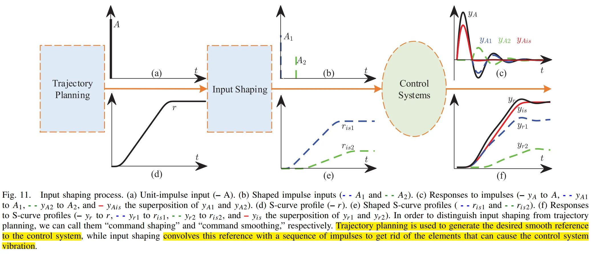
(d) 图的 caption: "S-curve profile" 直接声明 \(r(t)\) 就是我们之前在 "trajectory planning" 这一步得到的 \(p_{r}(t)\)。
所以其实可以把 Input Shaping 理解成：
把 trajectory planner 输出的一条 S-curve 复制几份，每份乘一个 coefficient，再错开一定时间，最后相加。——这就是全部 online algorithm
但有一个更重要的系统问题：Input Shaping 会增加 move time，这是 Input Shaping 最大的代价之一。
比如第二个 pulse 在：\(T=\frac{\pi}{\omega_d}\) 以后才发生,那么整条 trajectory 实际上就被拖长了。
这意味着：vibration suppression 和 throughput 存在直接 tradeoff。
对普通机械臂，这可能无所谓。但对光刻机：throughput 是核心指标，所以这个问题非常严重。
公开的 precision-motion 文献指出 input shaper 会延长 motion duration；在 point-to-point wafer-scanner motion 中，这直接对应 throughput penalty。
P4 现在，我们的问题转移到，如何求解最优参数¶
即：
中的：\(A_i\) 和 \(\tau_i\)
先定义符号：
-
二阶系统：
$\(G(s)=\frac{\omega_o^2}{s^2+2\xi\omega_o s+\omega_o^2}\)$ -
极点：\(s_{1,2}=-\xi\omega_o\pm\omega_o\sqrt{\xi^2-1}\), \(\sigma=-\xi\omega_o,\) \(\omega_d=\omega_o\sqrt{1-\xi^2}\)
- \(\omega_o\) 是自然频率，\(\xi\) 是阻尼比（damp ratio），本文中 \(\xi < 1\)。
二阶系统输入：
得到：
其中：
- \(B_{i}\left(w_{o}, \xi, t\right)= \left(w_{o} /\left(1-\xi^{2}\right)^{1 / 2}\right) A_{i} e^{-\xi w_{o}\left(t-\tau_{i}\right)}\)
- \(A\left(w_{o}, \xi, t\right)= \left(w /\left(1-\xi^{2}\right)^{1 / 2}\right) e^{-\xi w_{o} t}\left(\left[C\left(\xi, w_{o}\right)\right]^{2}+\left[S\left(\xi, w_{o}\right)\right]^{2}\right)^{1 / 2}\)
并且：
这一步实际上是作者把每个 impulse 引起的衰减正弦振动相加，然后把最终 residual vibration 拆成两个“正交分量”：
可以把它们粗略理解成：residual vibration 的 cosine component 和 sine component。不需要记公式。
论文用它们只是为了下一步得到一个标量 vibration amplitude：
它可以理解成：
- \(V=0 \Rightarrow\) 没有 residual vibration
- \(V\) 越大 \(\Rightarrow\) 剩余振动越严重
所以后面各种 ZV、ZVD 方法，其实就是围绕：\(V\rightarrow0\) 设计参数。
所以问题最后归结为如下约束优化问题：
这四个约束的工程含义分别非常清楚。
- \(\tau_1=0\) 表示不要无缘无故让第一个 command 也延迟。
- \(\sum A_i=1\) 尤其重要。它意味着 DC/unity gain 不变。例如原 trajectory 最终要求：\(r(\infty)=100\text{ mm}\)，那么 shaped trajectory 最终也必须还是：\(r_{\rm is}(\infty)=100\text{ mm}\)，不能因为 input shaping 最后只走到 80 mm。
- \(V=0\) 就是消 residual vibration。
- \(\min\tau_n\) 就是不要让 shaper 太长，否则 throughput 会下降。
由于上述超越方不等式方程组有很多解，可以进一步约束 taps 数量，于是得到了不同的设计方法：ZV/ZVD/ZVDD:
- ZV (Zero Vibration): \(n=2\)
- ZVD (Zero Vibration Derivative): \(n=3\)，不仅使 \(V(\omega_o, \xi)=0\)，还要求：\(\partial V(\omega_o, \xi)/\partial \omega_o = 0\)，即要求：系统自然频率附近 residual vibration 的一阶变化也为 0。
- ZVDD (Zero Vibration Double Derivative): \(n=4\)，进一步要求：\(\partial^2 V(\omega_o, \xi)/\partial \omega_o^2 = 0\)。
于是，它们的解为：
其中：
- \(\vec{A}=[A_1, A_2, \dots, A_n]\), \(\vec{\tau}=[\tau_1, \tau_2, \dots, \tau_n]\) 就是我们要求的 shaper 的幅值向量和延迟时间向量。
- \(T_d=\frac{2\pi}{\omega_d}\) 是系统的阻尼振荡周期。
- \(K=e^{-\xi \pi/(1-\xi^2)^{1/2}}\)
- stage 的 \(\omega_o, \xi\) 都是已知且相对固定，那么\(T_d, K\)这些量可以提前算好。
因此，这一步的 runtime workload 就是：delay buffer + MAC
很生动的：robustness–duration tradeoff
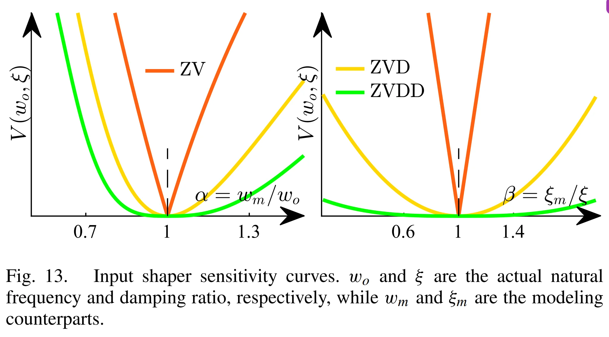
\(\xi_m, \omega_m\) 是模型参数，而实际系统的 \(\xi, \omega_o\) 可能与模型参数存在偏差，理想情况\(\alpha=1,\beta=1\)意味着模型完全准，观察曲线形状：
- ZV 的“谷”很尖：frequency 稍微估错，抑振性能就明显下降。
- ZVD 的谷更宽。
- ZVDD 更宽。
更高阶 derivative constraint 会在 nominal pole 附近放置更多 zeros，从而提高 robustness，但要付出 time penalty。
这也是为什么：
不只是 MAC 数增加，更重要的是：shaper duration increases
而对光刻机来说，duration 直接意味着 throughput
算法构建分析: Input Shaping
除了ZVD和ZVDD之外，robust input shaping 还有其它解决方案，例如 Extra Insensitivity(EI), Specified Insensitivity(SI), multiimpulse robust(MIR)等，这里是一个可探索的算法优化点。
P5 Input Shaper 与 Control Loop 的连接关系¶
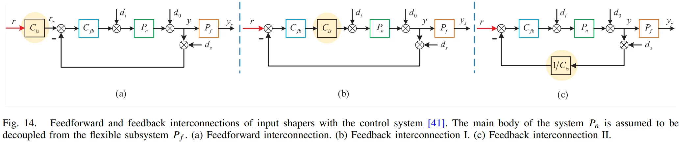
最常见的是方式 (a)，也就是我们上述讨论的部分，即将 Input shaper 放在 Control Loop 的外面，它只修改 reference，一个很大的优点是：它不会影响 closed-loop stability。
而目前有研究将 Input Shaper 放进 Control Loop 内部，外部 shaper 只能处理：由参考轨迹引起的振动，如果 vibration 是 disturbance 引起的，比如机械扰动，那么外部 reference shaper 无能为力。所以有人尝试把它放进 feedback loop，让它也参与 disturbance-induced flexible mode suppression：
- Fig. 14(b) 的 architecture I 对一种 sensor disturbance \(d_s\) 有效，但不抑制 output disturbance \(d_o\)。
- Fig. 14(c) 的 architecture II 正好相反。
算法构建分析：Input Shaping
| 项目 | Input Shaping |
|---|---|
| 解决问题 | reference 激励 flexible mode 导致 residual vibration |
| 输入 | 原始 trajectory \(r[k]\) |
| 输出 | shaped trajectory \(r_{\rm is}[k]\) |
| Plant knowledge | resonance frequency \(\omega_0\)、damping \(\xi\) |
| 核心参数 | \(A_i,\tau_i\) |
| 在线算法 | \(r_{\rm is}[k]=\sum A_i r[k-d_i]\) |
| Kernel | sparse FIR / delay-and-sum |
| ZV | 2 taps |
| ZVD | 3 taps |
| ZVDD | 4 taps |
| 在线复杂度 | \(N\) MUL + \(N-1\) ADD / sample |
| 主要 state | delay buffer |
| 参数设计 | exp / sqrt / nonlinear equations，可与实时执行分离 |
| 并行性 | taps、axes 天然并行 |
| 关键约束 | deterministic streaming |
| 主要 tradeoff | robustness vs shaper duration / throughput |
| FPGA/DSA 特征 | 非常友好，但计算量小 |
| 是否可能是主要算力热点 | 大概率不是 |
有一个很重要的认识：Input Shaping 看起来公式比 Trajector Planning 复杂得多，但从 hard-real-time hardware workload 来说，反而可能更简单。
Input Shaping 环节的理论公式大部分是在设计 Input Shaper 参数；真正每一个 servo sample 必须执行的核心，本质上只是：读取历史 setpoint + 常数乘法 + 累加
V. Multi-DOF Motion Control¶
晶圆上每个裸片的扫描均沿\(y\)方向进行，其运动轨迹由第四节中详述的一系列运动规划来实现。当一个裸片曝光完成后，晶圆台在x和y两个方向上同步加速，以将位置调整至下一个裸片。通过\(x-y\)平面内的运动，可完成整片晶圆的曝光。而在\(z\)轴以及 \(\theta_x, \theta_y, \theta_z\) 方向上的运动，则用于保持晶圆表面始终处于物镜的焦平面内。
掩模台和晶圆台的六自由度运动均由长行程模块（LSM）、短行程模块（SSM）乃至平衡质量（BM）协同实现，相关内容已在第二节A中讨论。本节特别指出，鉴于其典型性，多自由度运动控制的研究重点主要聚焦于六自由度 SSM。
A. Multivariable Control and Decentralized Control¶
针对MIMO系统的运动控制方法可分为两类：Multivariable Control(多变量控制)和 Decentralized Control(分散式控制)。
The former always encounters a cumbersome(笨重的，繁琐的) MIMO system identification problem, followed by a more tedious(乏味的) MIMO controller synthesis. What is more, the multi-intersected feedback loops may lead to internal uncertainties and even instability. 因此，在光刻机领域，多变量控制的应用并不普及。
由于 WS 的 COG 周围六个方向，即：\(x, y, z, \theta_x, \theta_y, \theta_z\) 彼此正交，通常只需在每个方向上分别采用单输入单输出（SISO）控制即可。这构成了 decentralized control 的基本思想。
分散控制的核心步骤是确定输入与输出之间的变换关系，该变换常被称为耦合矩阵，以使变换后的输入与输出之间的关系尽可能呈对角化形式，随后基于解耦系统中的对角元素设计多个独立的 SISO 控制器
下文中：
- \([x_l, y_l, z_l]\): 表示测量系统给出的，SCOG-CS 坐标系原点相对于 L-CS 坐标系的平移
- \([\theta_{xl}, \theta_{yl}, \theta_{zl}]\) 表示 SCOG-CS 绕 L-CS 坐标系各轴的旋转角
光刻机中的分散式控制系统示意图（图 16.）:
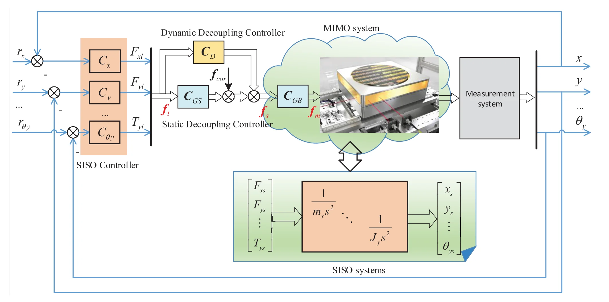
B. Static Decoupling Control¶
Gain Scheduling¶
为什么需要 decounpling ?¶
我们考虑一段物理位移（movement），如下图中的黑色箭头：
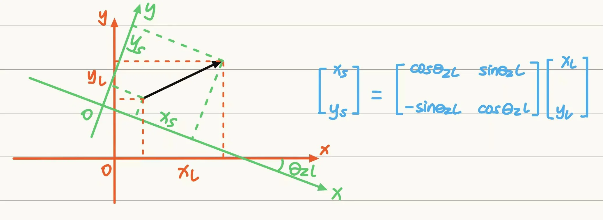
这段物理位移可以理解为 Wafer Stage / SCOG-CS 在准备曝光某个 die 前需要进行的一段位移。
图中红色坐标系表示 SCOG-CS，绿色坐标系表示 L-CS，这段位移可以分解为：
- SCOG-CS 下的: \([x_s, y_s]\)
- L-CS 下的: \([x_l, y_l]\)
虽然有两种坐标，但是它们描述的是同一段位移，只是在两种不同坐标系下的表示，即：
重要的是，wafer 由于 alignment correction 需要有 一定的 yaw rotation，因此 SCOG-CS 和 L-CS 两个坐标系的 x/y 轴并不平行，而是 SCOG-CS 的 x/y 轴相对于 L-CS 的 x/y 轴有一个旋转角：。
更准确来说，我们统一规定右手系：
\[R_z(+\theta)=\begin{bmatrix} \cos(\theta) & -\sin(\theta) \\ \sin(\theta) & \cos(\theta) \end{bmatrix}\]并规定：\(\theta_{zl} > 0\) 表示表示 SCOG-CS 相对于 L-CS 绕 \(+z\) 轴逆时针旋转
此外，需要注意：会出现 \(\theta_{zl}\) 不是因为 "wafer 的 die grid 在设计上故意相对 stage 坐标轴倾斜"，而是 "wafer 被装载、对准以后，wafer pattern/grid 与固定的 lens coordinate system 之间存在一个很小的 rotational alignment error，因此 stage 必须利用 \(\theta_{zl}\) DOF 修正它"
那么，SCOG-CS 下的位移 \([x_s, y_s]\) 与 L-CS 下的位移 \([x_l, y_l]\) 之间的关系为：
即：
\[\mathbf v_s=R_z(-\theta_z)\mathbf v_l\]
Example
假设当前准备曝光 wafer 上某一 die。
在 L-CS 中，stage COG 需要位于：\(x_l=100\ {\rm mm},y_l=0\)
同时 wafer 由于 alignment correction 需要有：\(\theta_{zl}=1\ {\rm mrad}\)
式 (18) 给出：\(x_s=x_l\cos\theta_{zl}+y_l\sin\theta_{zl}\approx100\ {\rm mm}\)
而 \(y_s=-x_l\sin\theta_{zl}+y_l\cos\theta_{zl}\) 约为：\(y_s\approx-100\ {\rm mm}\times10^{-3}=-0.1\ {\rm mm}\)
这是什么意思？
在 lens 坐标系看来：“Stage COG需要沿 \(x_l\) 移动了 100 mm。”
但是因为 stage 自己的坐标轴已经旋转了 \(1\) mrad，所以用 stage 自己的 axes 分解这个完全相同的 displacement 时：
于是：
L-CS 中的“纯 x motion”，在 SCOG-CS 中已经不是纯 x motion。
这就是后续 force coupling 的几何根源。
根据案例，我们可以知道上述 \([x_s, y_s]\)/\([x_l, y_l]\) 转换公式想表达的就是，不同 DOF 之间存在耦合，后续的 force 需要解耦。
Question 6 DOF 在实际 step-scan 过程中是如何影响 WS 的？¶
我们依旧延续之前的定义：
- \([x_l, y_l, z_l]\): 表示测量系统给出的，SCOG-CS 坐标系原点相对于 L-CS 坐标系的平移
- \([\theta_{xl}, \theta_{yl}, \theta_{zl}]\) 表示 SCOG-CS 绕 L-CS 坐标系各轴的旋转角
我们可以从上述例子中体会到，似乎 WS 的运动只需要关注 \(x, y, \theta_z\) 这三个 DOF 即可：
- \(x, y\) 方向上的水平平面运动用于将 WS 上的 die 对准 lens 的光学轴；
- \(\theta_z\) 方向上的旋转用于修正 wafer die grid的 alignment error。
那么这里就可能会存在一些疑惑：
- 为什么在实际的光刻机 step + scan 过程中，我们还需要不断去调整 WS 的 \(\theta_{zl}\) 呢？按理说不应该是一次固定后，我们后面就只需要修改 WS 的 \(x\) 和 \(y\) 坐标即可进行水平移动就行？因为固定好 \(\theta_{zl}\) 后，die grid 的方向就是 Lens 想要的方向了。在这种情况下，为什么还会有一系列复杂的 \theta_{zl} setpoints 需要 trajectory planning, input shaping，按理说这些不同的 setpoints 应该是同一个数值才对啊？
- 同理，\(\theta_{xl}\) 和 \(\theta_{yl}\) 是用来描述 SCOG-CS 相对于 L-CS 的 roll/pitch 的吧，需要这两个自由度上的运动，是为了确保晶圆表面始终位于 Lens 的焦平面上。那只需要一次确定好后，后面就不需要动了才对啊？为什么还需要不断的进行 setpoints generation, control, measurement 呢？
这里只做简短回答，详细的说明和完整回答可以参见文档：6-DOF 的运动控制的实际样貌说明。
首先需要明确：
- 6 DOF 控制 ≠ 6 DOF 都有复杂的时变 trajectory
- setpoint generator 决定“你想去哪”，而不保证 WS 的运动轨迹一定时刻符合 setpoint。feedback controller 负责“确保你真的在那里”，即纠正错误。
- 关于 6 DOF 的 setpoint generation：
- 水平方向(\(x, y, \theta_z\)) 的 setpoints 通常来自多项式运动轨迹规划，
- 垂直方向(\(z, \theta_x, \theta_y\)) 的 setpoints 来自于预先测绘好的晶圆 3D 形貌 map。
接下来正式回答问题：
对于 \(\theta_{zl}\)，按理说不应该是一次固定后，我们后面就只需要修改 WS 的 \(x\) 和 \(y\) 坐标即可进行水平移动就行？因为固定好 \(\theta_{zl}\) 后，die grid 的方向就是 Lens 想要的方向了**？
事实上，曝光时 yaw 确实应尽量保持不变，Butler 在 2011 年的论文中明确提到：
during an exposure scan，yaw rotation 尽量保持 constant。
并且明确指出：
这也是他后面简化 GS 公式的原因之一。
那为什么 \(\theta_z\) controller 仍然必须每个 sample 工作？——因为近乎维持常数的 reference 不会确保每个时刻 WS 都会处于预期的 yaw 角度，因为实际物理系统中存在着：
- actuator force disturbance；
- reaction forces；
- mechanical vibration；
- crosstalk；
- model uncertainty；
- sensor noise；
- structural modes；
- WS 本身剧烈 \(x/y\) acceleration 带来的动态影响。
这就是：
setpoint generator 决定“你想去哪”；feedback controller 负责“确保你真的在那里”。
因此我们事实上可以认为：对于最简单的情况，完全可以是整片 wafer 得到一个 global yaw correction：
更复杂的实际 overlay/alignment system 当然可能考虑非理想 wafer grid deformation 等因素，但这已经超出当前 Song/Butler 这两篇论文在这里明确给出的内容。
第二个问题：
同理，\(\theta_{xl}\) 和 \(\theta_{yl}\) 是用来描述 SCOG-CS 相对于 L-CS 的 roll/pitch 的吧，需要这两个自由度上的运动，是为了确保晶圆表面始终位于 Lens 的焦平面上。那只需要一次确定好后，后面就不需要动了才对啊？为什么还需要不断的进行 setpoints generation, control, measurement 呢？
同理，依然是上述论断，由于存在的非理想扰动，不能确保 WS 始终处于预期的 roll/pitch 角度与 \(z\) 值，因此必须存在 Control Loop，setpoint 不保证 WS 的运动轨迹一定时刻符合 setpoint。
此外，这三个自由度还存在一个更加严重的问题：wafer surface 不是一个完美平面，可能存在：
- bow
- warp
- local height variation
- chuck/wafer surface nonflatness
- 装夹造成的局部 tilt
因此，对于 \(z, \theta_{x}, \theta_{y}\) 本身，我们真的需要需要一个时变的 setpoint trajectory 来确保 wafer surface 始终处于 lens 的焦平面上。
那么，我们是如何计算得出这三个 DOF 的 setpoints 呢？这需要我们获取晶圆表面形貌的信息——也就是测绘阶段得到的 3-D map！
这两个问题反而引出了一个可能比普通 S-curve 更值得研究的 setpoint-generation workload：
它在线实现可能涉及：
- map lookup；
- interpolation；
- local plane fitting；
- gradient/slope estimation；
- coordinate transform。
例如从纯几何直觉上，如果有连续 surface：
那么局部 slope：
就和所需的 pitch/roll 有直接关系。这需要我们从 3-D map 中提取局部平面信息，然后计算出 \(z, \theta_x, \theta_y\) 的 setpoints。这就涉及到了查表、插值、拟合等算法内核。
算法构建分析: Veritcal Setpoint Generation
Song 只告诉我们 vertical setpoints 来源于 3-D map，并没有给出具体 map interpolation / leveling setpoint-generation 算法。
所以这些 kernel 目前只能作为“值得进一步寻找位置/leveling算法论文”的候选，不能直接说 Song 已经给出了这些算法。
这里也是一个值得探索的算法优化点。
这两个问题最终可以压缩为一个结论：
典型 exposure scan 中，
- \(\theta_z\) 可以尽量保持 constant；但其 feedback loop 仍持续工作。
- 真正明显随 wafer 位置变化的是 \(z,\theta_x,\theta_y\)，因为它们负责追踪 wafer 3-D surface，而 Song 明确指出这些 vertical setpoints 来自 measurement 阶段生成的 3-D map
完整的 Gain Scheduling 公式¶
我们延续之前的定义：
- \([x_l, y_l, z_l]\): 表示测量系统给出的，SCOG-CS 坐标系原点相对于 L-CS 坐标系的平移
- \([\theta_{xl}, \theta_{yl}, \theta_{zl}]\) 表示 SCOG-CS 绕 L-CS 坐标系各轴的旋转角
规定右手系：
并规定：\(\theta_{zl} > 0\) 表示表示 SCOG-CS 相对于 L-CS 绕 \(+z\) 轴逆时针旋转
我们对方程：
对时间求两次导数，并采用一阶近似：
这些假设，无一例外，都是基于着：
这一关键事实。
将该关系式乘以 Stage 质量 \(m\) 以及 \(\theta_{z}方向的\)转动惯量 \(J_z\)，得到：
同理，在 \((y, z, \theta_{x})\) 以及 \((x, z, \theta_{y})\) 方向上有：
其中 \(H_{ls}\) 表示 SCOG-CS 原点（即 Wafer Stage 质心）相对于晶圆表面的距离。
将上述两式联立，即可得到将 L-CS 中的力：
转化为 SCOG-CS 中的力
的表达式（公式 （21））：
关于 GS 解耦公式有如下注意事项：
- 在式(21)中引入测量值会形成一个反馈回路，这可能会危及系统的稳定性，因此，在 GS 矩阵 \(C_{\rm GS}\) 以及 Coriolis Forces \(f_{\rm cor}\) 项中，实际使用的是 reference 值：\([r_x, r_y, r_{\theta_z}, r_z, r_{\theta_x}, r_{\theta_y}]^T\) 而非测量值：\([x_{l}, y_{l}, \theta_{z_l}, z_{l}, \theta_{x_l}, \theta_{y_l}]^T\)
- 如式(21)所示，GS 矩阵 \(C_{\rm GS}\) 与位置相关，且与平台的几何布局完全无关。这是其与后文讨论的 GB 矩阵 \(C_{\rm GB}\) 的主要区别之一。
Gain Balancing¶
工作台的运动由多个 actuator（motor）物理驱动，而这些 actuator 的施力点并不与工作台的重心重合，因此需要将作用于工作台重心的虚拟力:
转换为各 actuator 实际产生的力。这一过程称为Gain Balancing(GB)。如图 16 所示，GB 的输入为作用于工作台重心的力，其输出则为各执行器应产生的力。最终实现的效果就是：
The physical actuator system with GB is equivalent to a virtual actuator system with forces acting at the stage COG.
图18展示了 WS 中 SSM 的 SOCG‑CS 对应的几何 Actuator 布局示例。
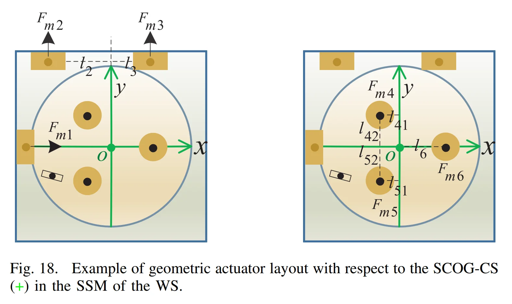
- 水平运动由三台电机实现，其中 \(F_{m1}\) 在 \(x\) 方向产生力 \(F_{xs}\)，\(F_{m2}\) 和\(F_{m3}\) 共同在 \(y\) 方向产生力 \(F_{ys}\)，并在 \(\theta_z\) 方向产生扭矩 \(T_{zs}\)。
- 垂直运动同样由三台电机驱动，\(F_{m4}\)，\(F_{m5}\) 和 \(F_{m6}\) 共同在 \(z\) 方向产生力 \(F_{zs}\)，并在 \(\theta_y\) 方向产生扭矩 \(T_{ys}\)，而 \(F_{m4}\) 和 \(F_{m5}\) 则在 \(\theta_x\) 方向产生扭矩 \(T_{xs}\) 。因此，我们有：
将上述关系式进行逆变换，即可得到从 SCOG‑CS 坐标系中的力:
到各电机力
的转换矩阵，如下所示（公式 22.）
其中：
- \(\alpha = 1/(l_2 + l_3)\)
- \(\beta = 1/[l_{42}(l_{51}+l_{6})+l_{52}(l_{41}+l_{6})]\)
GB矩阵 \(C_{\rm GB}\) 完全由 Stage 内部的几何执行器布局决定，而 GS 矩阵 \(C_{\rm GS}\) 由 Stage 位置以及质量与惯量之比决定。因此，具有不同执行器布局的多自由度的 Stage 在 \(C_{\rm GB}\) 上可能表现出显著差异，而其 \(C_{\rm GS}\) 通常较为相似。
如果实际执行器的布局与设计的标称布局一致，则由
\(C_{\rm GB}\) 实现的解耦系统动态将呈对角形式，例如公式 (22) 所展示的那样，但是实际上因为如下因素，会导致“对角形式”不成立：
- \(l\) 等布局几何参数因为 actuator 安装误差/质心偏移而与设计值不一致；
- actuator 实际输出的力方向与期望值不一致
最终导致各 DOF 间出现内部 crosstalk：
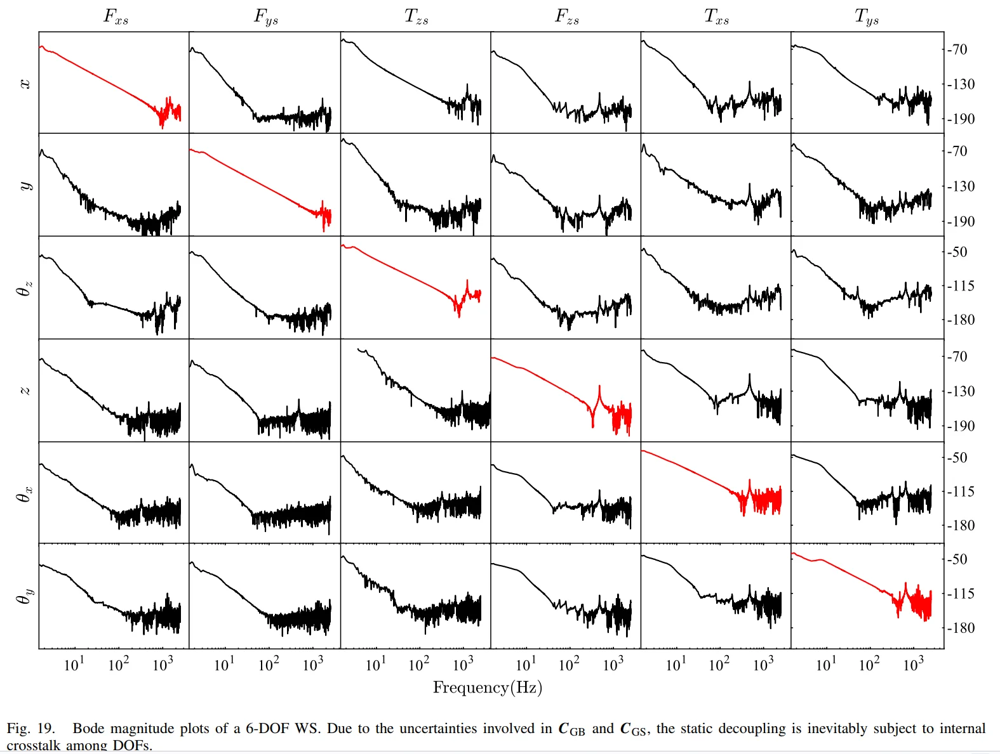
算法构建分析：静态解耦优化
近年来出现了各种：
- model-based
- data-based
等对 \(C_{\rm GB}\) 解耦矩阵进行优化的手段，诸如参考文献[62]-[68]，因此这里是一个可探索的算法优化点。
但是这些静态解耦方法往往无法完全消除各自由度之间的交叉耦合，因为它们只能调整解耦矩阵中的模型参数，而无法改变模型结构。因此，静态解耦本身被认为不够充分。此外，还存在着光刻机运动台 flexible mode 以及纳米级精度的问题；最终导致了：
在具有纳米级精度的多输入多输出（MIMO）运动系统中，静态解耦主要应用于设计阶段，或作为提供标称解耦的一种手段，随后再辅以动态解耦，以进一步降低交叉耦合的影响。
C. Dynamic Decoupling Control¶
Static decoupling 只用一个瞬时的常数矩阵做 DOF 变换；Dynamic decoupling 则在 DOF 之间增加一组“带记忆的数字滤波器”，专门预测并抵消残余串扰。
P1 Static Decoupling 到底哪里不够？¶
理想情况下，你做完 GS + GB，希望得到：
也就是说：
给 \(x\) 轴一个 force command，只有 \(x\) 动。
但真实系统更像：
其中：\(G_{12}(z),G_{21}(z),\dots\neq0\)。这些就是 residual crosstalk。
例如 \(u_x[k]\neq0\) 除了产生 \(y_x\) 之外，还会让 \(y_y,y_{\theta_z}\) 出现小幅振动。
为什么静态矩阵不能彻底消掉？
因为 GS/GB 本质上处理的是几何关系、COG、actuator layout 等近似“静态”的 coupling。
但实际 stage 还包含：
- flexible modes；
- resonance / antiresonance；
- actuator / sensor dynamics；
- assembly error；
- 频率相关的结构响应。
于是 coupling 并不是一个常数，比如 \(y_y=0.01\,u_x\) 这么简单。真实情况更可能是：
- 10 Hz 下 \(x\to y\) coupling 很小；
- 200 Hz 下变大；
- 500 Hz 附近又因为柔性模态发生明显变化。
所以它是 "frequency-dependent coupling"，这就是所谓 dynamic coupling。
此时，decoupling 矩阵中的非对角线元素会变成与时间或者频率相关的函数，即频率响应/传递函数，例如：
——它其实就是一个 Digital Filter。例如：
那么：
看到这里应该已经能把它完全翻译成 DSP 语言：
它之所以叫 dynamic，是因为：当前 compensation 不只依赖当前输入，还依赖历史 sample。
P2 动态解耦矩阵 \(C_{D}\)¶
论文定义 dynamic decoupling matrix \(C_D(z)\) 通常具有如下形式：
这里最重要的是两个特点。
第一，对角线全部是 0
因为：
- \(x\to x\)
- \(y\to y\)
- \(z\to z\)
这些主通道已经交给 static decoupling + SISO controller 处理。
\(C_D\) 只管：
也就是 off-diagonal residual coupling。
第二，每一个 \(F_{ij}(z)\) 都不是标量，而是 transfer function/digital filter
\(F_{ij}(z)\) 用于补偿参与 coupling，例如：假设 \(x\to y\) 残余 coupling 是：\(G_{yx}(z)\)
也就是说，控制 \(x\) 时，会额外在 \(y\) 产生：\(y_{\rm cross}(z)=G_{yx}(z)u_x(z)\)
那我们可以额外生成一个补偿：\(u_{y,\rm comp}(z)=F_{yx}(z)u_x(z)\)，目标是让最终：\(y_{\rm cross}+y_{\rm comp}\approx0\)
所以直觉上 \(F_{yx}(z)\) 是在近似一个 "cross-coupling dynamics 的 inverse / cancellation filter"。
此外，\(F_{ij}(z)\) 还必须是 filter 而非 scalar，例如由于 flexible modes 的存在，真实串扰可能是：
那就必须用：
这里的 \(F_{ij}(z)\) 通常是 FIR 滤波器，因为：
- FIR 滤波器保证没有非平凡极点
- 实现简单
- latency/MAC 可预测
更重要的是：FIR 可以放置 zeros，用来逼近低频 coupling / inverse dynamics 中的 antiresonance 特性。
Resonance 和 Antiresonance
- resonance：在某个频率附近，stage 的响应被放大，即 \(G(e^{j\omega})\) 变得很大；
- antiresonance：在某个频率附近，stage 的响应被抑制，即 \(G(e^{j\omega})\) 变得很小。
在 MIMO stage 中，cross-channel transfer function \(G_{ij}(z)\) 也会有这些峰谷
这两种现象都会导致 coupling dynamics 变得非常复杂，甚至在某些频率下，coupling 可能会突然增强或减弱。
Dynamic decoupler 希望设计：$\(F_{ij}(z)\)$
来“反着塑形”，让最终 cross-channel path 尽量变小。
但只是 FIR 滤波器通常不够，只有 zeros，没有一般意义上的非零 dynamic poles。所以它很适合做某些 notch / cancellation。但真实 high-frequency coupling 很复杂，可能需要既有 zeros 又需要有 poles 才能逼近。因此论文说：FIR cannot counteract high-frequency coupling
于是后面的工作加入 low-pass filters，即：
论文给出的两个主要作用是：
- 引入额外 poles，更好拟合 plant 的 dynamic behavior；
- 防止 approximate inversion 在高频把噪声或模型误差疯狂放大。
尤其是第二点很重要，比如某个频率范围内 \(|G_{ij}(e^{j\omega})|\) 本身很小，而只用 \(F_{\rm FIR}(z)\) 可能会出现 \(G^{-1}(e^{j\omega})\) 使得 "inverse 变得很大"，这会把：
- measurement noise；
- quantization noise；
- unmodeled high-frequency dynamics
全部一起放大。
所以工程上不能“无脑求逆”。加 LPF 实际上就是：
低频认真做 decoupling；高频少管一点，避免补偿器自己出事。
dynamic decoupling 一般额外并联在 \(C_{\rm GS}\)，如上图 16。从架构角度，这一点非常漂亮：
Dynamic Decoupler 可以作为一个独立 accelerator block / filter-bank block 插入现有 pipeline。
Filter coefficients 是怎么得到的？
论文明确提到：通过有限组 perturbed-parameter experiments，迭代最小化 crosstalk-induced error，得到 FIR coefficients
算法构建分析：Dynamic Decoupling
我们对 Dynamic Decoupling 做 workload 分析：
例如：
那么 DOF \(j\) 对 DOF \(i\) 的 decoupling 就是：
DOF \(i\) 的 dynamic compensation 就是：
一个 \(C_D\) 矩阵最多 30 个 \(F_{ij}(z)\)，假设每个 FIR 滤波器长度都是 \(L\)，那么每个 sample 的计算亮就是：
即使 \(L=64\)，也才：\(1920 \text{MACs}\)，在 \(20\text{KHz}\) 下，只有：
所以单 stage 的 dynamic decoupling 并不算一个“大算力” workload。
Memory workload 也很好估
每个长度 \(L\) FIR 需要：
- \(L\) coefficients；
- 历史 samples。
但注意同一个 input channel \(u_j\) 被多个 \(F_{ij}\) 使用。所以不必真的给 30 个 filter 各存一套 input history。可以让：
只保存一次，然后同时 feed 给：
因此这是很好的：input-delay-line reuse机会。
- 对于 6 inputs：历史 buffer 大致 \(6L \times \text{FP32/INT8}\)
- 而 coefficient memory：\(30L \times \text{FP32/INT8}\)
即使 FIR 滤波器再叠加上作为 LPF 的 IIR 滤波器，dynamic decoupling 的 computing/memory workload 也不大。
此外，Dynamic Decoupling 这一问题并未彻底解决，FIR+LPF 不是唯一答案，优化时使用的 “crosstalk error” 里面可能混入：
- coupling-induced error；
- 非 coupling 引起的其他 error。
于是算法虽然让 measured crosstalk error 下降了，但不保证最终的 \(|G(e^{j\omega})|\) 一定下降，这里仍然是一个值得探索的算法优化点。